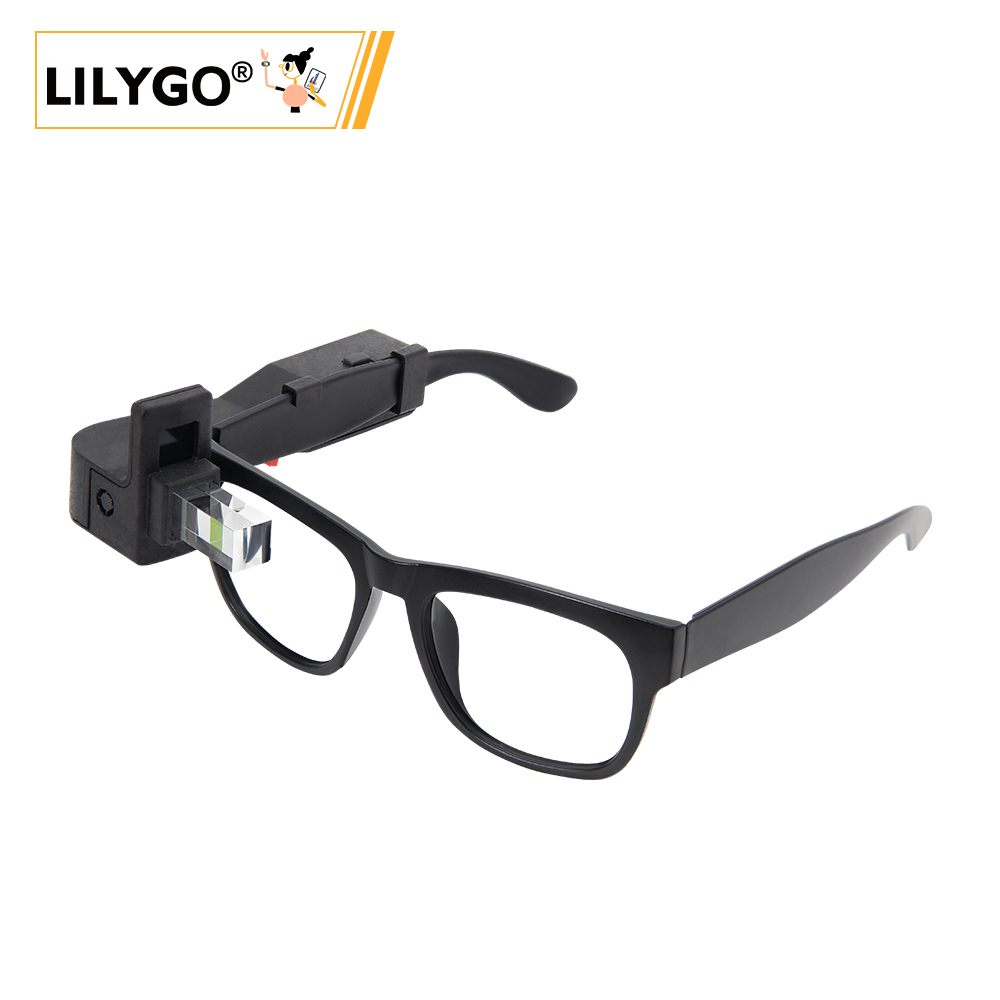
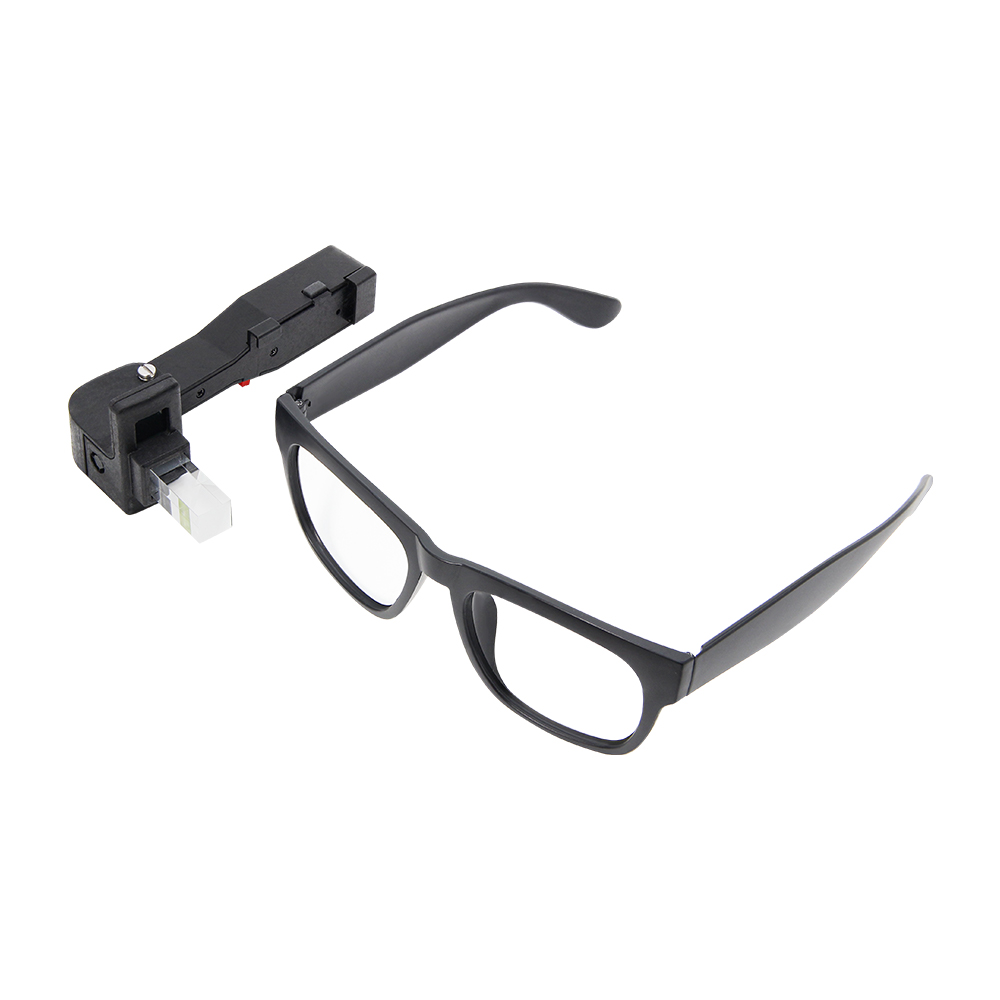
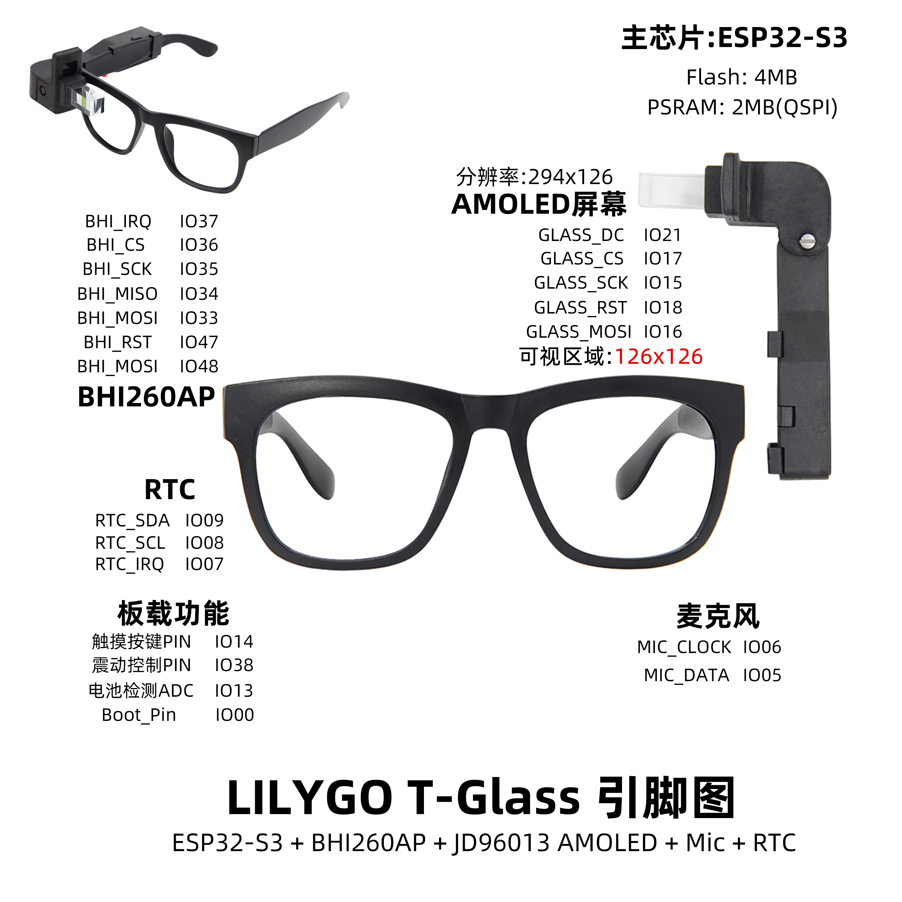
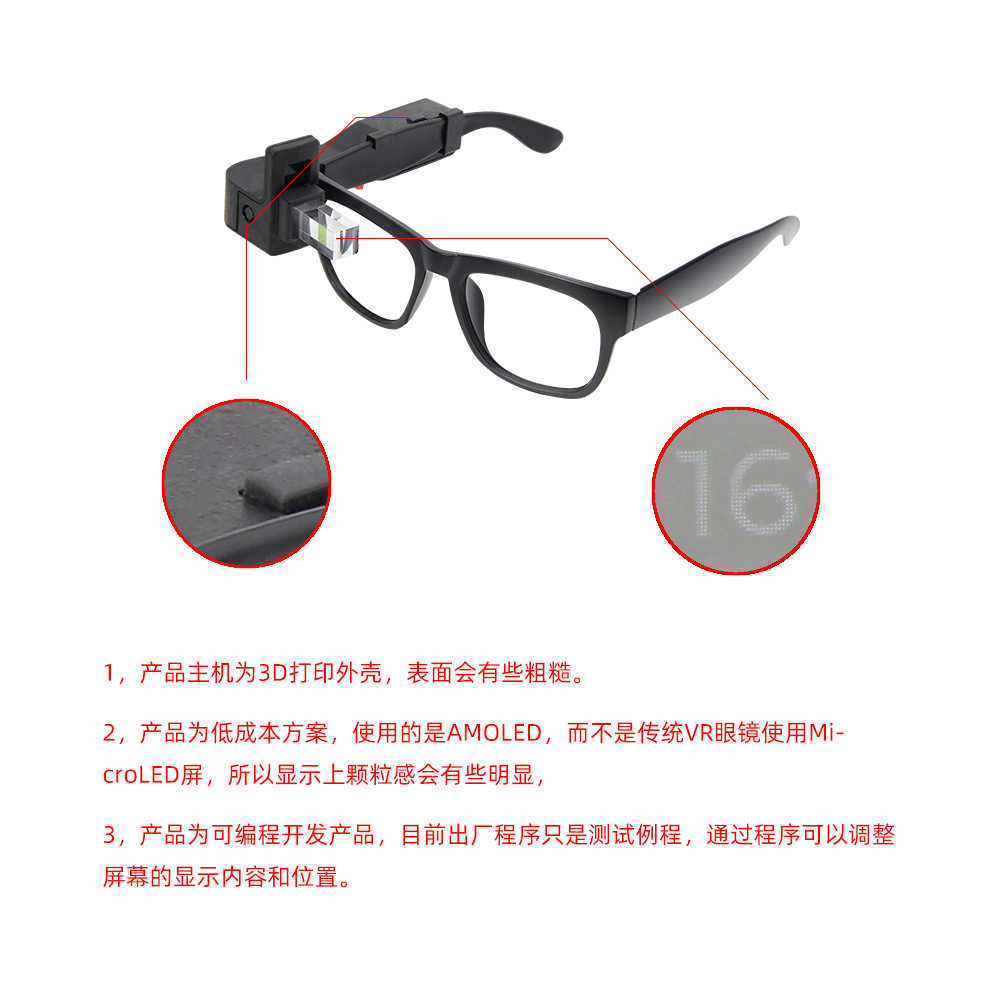

中文 简体
中文 简体LILYGO T-Glass

版本迭代
| Product(PinMap) | SOC | Flash | PSRAM | Resolution | Visible Area |
|---|---|---|---|---|---|
| T-Glass/V2 | ESP32-S3 FN4R2 | 4MB | 2MB(QSPI) | 294x126 | 126x126 |
| T-Wristband | ESP32-S3 FN4R2 | 4MB | 2MB(QSPI) | 294x126 | 126x250 |
| Current consumption | Working current | sleep current | sleep mode |
|---|---|---|---|
| T-Glass/V2 | (240MHz) WiFi On 90~230+ mA | about 300uA | touch button wakeup |
| T-Wristband | (240MHz) WiFi On 90~230+ mA | about 300uA | touch button wakeup |
购买链接
| Product | SOC | FLASH | PSRAM | Link |
|---|---|---|---|---|
| T-Glass | ESP32-S3 | 4MB | 2MB | LILYGO Store |
| T-Wristband | ESP32-S3 | 4MB | 2MB | LILYGO Store |
目录
描述
LILYGO T-Glass 是一款基于ESP32-S3主控芯片的智能可穿戴设备，集成BHI260AP运动传感器和JD96013A型号的AMOLED显示屏，具备126×126像素的可见显示区域，支持触控交互与高对比度视觉效果。内置4MB Flash和2MB OSPI PSRAM，确保流畅运行与数据存储能力。功能模块丰富，包含实时时钟（RTC）、麦克风（支持MIC_CLOCK/MIC_DATA音频输入）、振动反馈（Vibration_Pin）、电池电量监测（BAT_ADC）以及触摸按键（Touch_Button），适用于运动追踪、智能提醒等场景。通过LILYGOT-GlassPINMAP接口方案，整合了SPI、I²C等通信协议，优化了硬件布局，适合轻量化设计需求，如智能眼镜或便携式穿戴设备，兼具低功耗与高性能特性。
预览
实物图

引脚图

模块
MCU
- 芯片：ESP32-S3 FN4R2
- PSRAM：2MB (QSPI PSRAM)
- FLASH：4MB
- 无线：2.4 GHz Wi-Fi & Bluetooth 5 (LE)
屏幕
- 尺寸：1.1英寸LTPS AMOLED屏幕
- 分辨率：294×126px
- 屏幕类型：LTPS AMOLED
- 驱动芯片：JD9613
- 兼容库：LVGL
- 总线通信协议：SPI
运动传感器
- 芯片：BHI260AP
- 功能：AI智能运动传感
音频系统
- 功能：麦克风输入
- 接口：MIC_CLOCK/MIC_DATA
电源管理
- 电池：锂聚合物电池
- 监测：电池电量监测(ADC)
概述

| 组件 | 描述 |
|---|---|
| MCU | ESP32-S3 FN4R2 |
| FLASH | 4MB |
| PSRAM | 2MB |
| 屏幕 | 1.1英寸 JD9613 LTPS AMOLED |
| 运动传感器 | BHI260AP AI智能传感器 |
| 触摸 | 侧面触摸按钮 |
| RTC | PCF85063A 实时时钟 |
| 音频 | 麦克风输入 |
| 振动 | 振动反馈电机 |
| 无线 | 2.4 GHz Wi-Fi & Bluetooth 5 (LE) |
| USB | 1 × USB Port (TYPE-C接口) |
| 扩展接口 | 2 × QWIIC 4 pin接口 |
| 按键 | 1 x RESET 按键 + 1 x BOOT 按键 |
| 开关 | 侧面电源开关 |
| 尺寸 | 140 × 67 × 111 mm |
快速开始
示例支持
./examples/
├── Glass # Initial version
│ ├── Glass6DoF
│ ├── GlassBatteryVoltage
│ ├── GlassDeepSleep
│ ├── GlassDisplayRotation
│ ├── GlassFactory
│ │ └── src
│ ├── GlassHelloWorld
│ ├── GlassRtcAlarm
│ ├── GlassRtcDateTime
│ ├── GlassTouchButton
│ ├── GlassTouchButtonEvent
│ └── GlassVoiceActivityDetection
├── GlassV2 # Modify the reflective prism version
│ ├── Glass6DoF
│ ├── GlassBatteryVoltage
│ ├── GlassDeepSleep
│ ├── GlassFactory
│ │ └── src
│ ├── GlassHelloWorld
│ ├── GlassRtcAlarm
│ ├── GlassRtcDateTime
│ ├── GlassTouchButton
│ ├── GlassTouchButtonEvent
│ └── GlassVoiceActivityDetection
└── Wristband
├── Wristband6DoF
├── WristbandBatteryVoltage
├── WristbandDeepSleep
├── WristbandDisplayRotation
├── WristbandDisplayVisualWindow1
├── WristbandFactory
│ └── src
├── WristbandHelloWorld
├── WristbandLightSleep
├── WristbandRtcAlarm
├── WristbandRtcDateTime
├── WristbandTouchButton
└── WristbandTouchButtonEvent
PlatformIO
- 安装 Visual Studio Code 和 Python（推荐Python 3.8+版本）
- 在 Visual Studio Code 的扩展商店中搜索
PlatformIO插件并安装 - 安装完成后，需重启 Visual Studio Code
- 重启 Visual Studio Code 后，点击软件左上角的
文件（File）→打开文件夹（Open Folder）→ 选择LilyGO T-Wristband and T-Glass项目目录 - 等待第三方依赖库自动安装完成（首次打开可能需要几分钟）
- 点击打开项目中的
platformio.ini配置文件，找到platformio配置段 - 解除其中一行
src_dir = xxxx的注释（删除行首的;），确保仅保留一条生效配置（根据目标开发板选择对应目录） - 点击软件左下角的（✔）图标开始编译项目
- 将开发板通过USB线连接至电脑
- 点击（→）图标上传固件至开发板
- 点击（插头图标）打开串口监视器，查看设备输出日志
- 若出现无法写入固件或USB设备持续闪烁的情况，请查看下方的 常见问题解答（FAQ）
Arduino
以下是纯中文版本（可直接复制），适配技术文档的准确性和操作指引清晰度：
- 安装 Arduino IDE
- 安装 Arduino ESP32 2.0.5 版本及以上、3.0 版本以下（基于稳定版库），请确保开发板管理器中的链接为：
https://espressif.github.io/arduino-esp32/package_esp32_index.json - 点击
项目（Sketch）→包含库（Include Library）→管理库（Manage Libraries） - 在库搜索框中输入
LilyGO T-Wristband and T-Glass→ 点击安装（Install）→ 选择安装全部（Install ALL） - 在库搜索框中输入
lvgl→ 选择v8.4.0版本 → 点击安装（Install） - 在库搜索框中输入
SensorLib→ 选择v0.1.8版本 → 点击安装（Install） - 点击
文件（File）→示例（Examples）→LilyGO T-Wristband and T-Glass→选择对应的示例程序 - 点击
工具（Tools），根据下表进行配置选择：
| Arduino IDE Setting | Value |
|---|---|
| Board | ESP32S3 Dev Module |
| Port | Your port |
| USB CDC On Boot | Enable |
| CPU Frequency | 240MHZ(WiFi) |
| Core Debug Level | None |
| USB DFU On Boot | Disable |
| Erase All Flash Before Sketch Upload | Disable |
| Events Run On | Core1 |
| Flash Mode | QIO 80MHZ |
| Flash Size | 4MB(32Mb) |
| Arduino Runs On | Core1 |
| USB Firmware MSC On Boot | Disable |
| Partition Scheme | Default 4M with spiffs(1.2M APP/1.5MB SPIFFS) |
| PSRAM | QSPI PSRAM |
| Upload Mode | UART0/Hardware CDC |
| Upload Speed | 921600 |
| USB Mode | CDC and JTAG |
- 加粗项为必填配置，其他项根据实际情况选择。
- 选择对应的
端口（Port）（需先连接开发板） - 点击
上传（upload），等待编译和写入完成 - 若出现无法写入固件或USB设备持续闪烁的情况，请查看下方的 常见问题解答（FAQ）
开发平台
相关测试
常见问题
该开发板使用USB作为JTAG上传端口。若需通过USB打印串口信息，需开启USB_CDC_ON_BOOT配置。
若上传程序时找不到端口，或USB被用于其他功能导致端口不显示，请手动进入上传模式：- 通过USB线连接开发板
- 长按BOOT按键，保持长按的同时按下RST按键
- 先松开RST按键
- 再松开BOOT按键
- 上传程序
若上述方法无效，请烧录二进制文件以检查硬件是否正常
若使用外部电源而非USB-C供电，请关闭USB_CDC_ON_BOOT选项。这是因为开发板启动时会等待USB接入。
对于Arduino IDE用户，可在选项中关闭该功能。请注意，关闭USB_CDC_ON_BOOT会关闭USB-C的串口重定向，此时通过USB-C打开端口将无法看到任何串口信息，信息会从GPIO43和GPIO44输出：
工具（Tools）-> USB CDC On Boot -> 禁用（Disable）对于Platformio用户，可在ini文件中添加以下编译标志：
build_flags = ; 启用-DARDUINO_USB_CDC_ON_BOOT会在启动时开始打印并等待终端接入 ; -DARDUINO_USB_CDC_ON_BOOT=1 ; 启用-UARDUINO_USB_CDC_ON_BOOT会关闭打印，使用电池供电时不会阻塞 -UARDUINO_USB_CDC_ON_BOOT
JD9613显示屏的RAM仅为屏幕尺寸的1/2，不支持旋转。方向0和1可调整垂直方向，水平方向1和3为同一方向：
// 设置屏幕为竖屏，0和2是两个相反的垂直方向 amoled.setRotation(0); amoled.setRotation(2); // 设置屏幕为横屏，1和3方向相同且无法改变 amoled.setRotation(1); amoled.setRotation(3);
项目
| Product(PinMap) | schematic |
|---|---|
| T-Glass | schematic |
| T-Wristband | schematic |